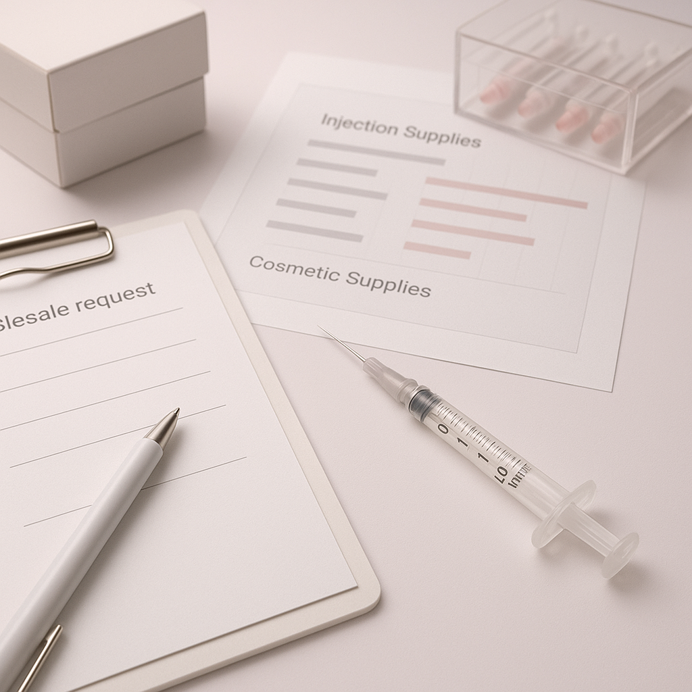

This guide provides essential insights for sourcing B.Braun Omnican 1ml for aesthetic clinics, helping professional buyers navigate the procurement process effectively.
As a professional buyer in the aesthetic clinic industry, sourcing the right injection supplies can significantly impact your practice's efficiency and patient satisfaction. The B.Braun Omnican 1ml is a popular choice among clinics for its reliability and ease of use. However, navigating the wholesale market to find a trustworthy supplier can be challenging, especially when considering factors like pricing, packaging, and shipping logistics.
This guide aims to streamline your sourcing process for the B.Braun Omnican 1ml, providing you with practical insights and actionable steps to ensure you make informed purchasing decisions. Understanding the nuances of wholesale sourcing will not only save you time but also enhance your clinic's operational effectiveness.
Key Takeaways
- Identify reputable wholesale suppliers for B.Braun Omnican 1ml to ensure product quality.
- Understand the importance of minimum order quantities (MOQ) to optimize your inventory management.
- Evaluate packaging options to ensure product integrity during shipping.
- Communicate clearly with suppliers regarding delivery timelines and documentation requirements.
- Plan your reorder strategy to maintain consistent stock levels without overcommitting financially.
What this guide covers
- Understanding B.Braun Omnican 1ml
- Buyer scenarios and needs
- Comparison criteria for suppliers
- Checklist for requesting quotes
- Logistics: shipping, packing, and documentation
- MOQ and reorder planning
- Frequently asked questions
What buyers should understand first

The B.Braun Omnican 1ml is a prefilled syringe designed for various aesthetic applications. It is known for its precision and ease of use, making it a staple in many clinics and spas. Understanding the product's specifications, such as its compatibility with different treatments and its storage requirements, is crucial for buyers. This knowledge helps ensure that the product meets the needs of your practice and adheres to local regulations.
When sourcing this product, it's important to recognize that the quality of injection supplies can directly affect patient outcomes. Therefore, selecting a reliable supplier who can provide consistent quality and timely deliveries is essential. The B.Braun Omnican 1ml's design minimizes the risk of contamination and ensures accurate dosing, making it a preferred choice for aesthetic procedures.
Which buyers is this most relevant for?
This sourcing guide is particularly relevant for aesthetic clinics, spas, resellers, and distributors looking to stock B.Braun Omnican 1ml. Professional buyers in these sectors often face unique challenges, such as managing inventory levels, ensuring compliance with local regulations, and evaluating supplier reliability. Depending on your business model, your order planning needs may vary; for instance, clinics may require smaller, more frequent orders, while resellers might focus on bulk purchasing to maximize profit margins.
For clinics, understanding patient demand and treatment schedules is vital for planning orders effectively. Spas may need to evaluate seasonal trends, while resellers must consider market competition and pricing strategies. Each scenario requires a tailored approach to sourcing that aligns with specific operational goals.
How to compare options before ordering
When evaluating wholesale suppliers for B.Braun Omnican 1ml, consider the following criteria:
- Product Type: Ensure you are sourcing the correct variant of the B.Braun Omnican 1ml that meets your clinic's needs.
- Brand Reputation: Research the supplier's reputation in the market to gauge their reliability and product quality.
- Packaging: Check the packaging options available to ensure they are suitable for your storage and handling requirements.
- Batch and Expiry Visibility: Confirm that the supplier provides clear information about batch numbers and expiry dates to maintain compliance.
- Supplier Communication: Evaluate how responsive and transparent the supplier is regarding inquiries and order updates.
- Destination Requirements: Understand any specific logistics or customs requirements for your location to avoid delays.
Buyer checklist before requesting a quote
- Confirm the product specifications and variants needed.
- Determine your minimum order quantity (MOQ) based on your inventory needs.
- Gather information about your preferred packaging options.
- Clarify shipping requirements, including delivery timelines and costs.
- Prepare any necessary documentation for compliance and customs.
- Outline your payment terms and conditions for the order.
- Review your current inventory levels to avoid overordering.
Shipping, packing and documentation questions
Logistics play a crucial role in the procurement process. When sourcing B.Braun Omnican 1ml, consider the following shipping and packing questions:
- What are the shipping costs and delivery timelines?
- How will the products be packed to prevent damage during transit?
- What documentation is required for customs clearance?
- Are there any specific handling instructions for the products upon arrival?
- What are the supplier's policies regarding returns or damaged goods?
- How will the supplier communicate updates regarding your shipment?
MOQ, quotation and reorder planning
Preparing for your order involves understanding the minimum order quantities (MOQ) set by suppliers. This helps you manage your inventory effectively and avoid overstocking. When requesting a quote, be ready to provide details such as:
- The quantity of B.Braun Omnican 1ml you wish to order.
- Any specific variants or packaging preferences.
- Your destination details to assess shipping costs and timelines.
- Your expected reorder frequency based on usage.
Contact SOLA to confirm current availability and obtain a wholesale quotation tailored to your needs.
FAQ
What is the typical MOQ for B.Braun Omnican 1ml?
The MOQ can vary by supplier, so it's essential to confirm this detail when requesting a quote.
How can I ensure the quality of the products I receive?
Choose reputable wholesale suppliers and verify their quality assurance processes.
What should I do if my order is delayed?
Contact your supplier immediately for updates and potential solutions to expedite the process.
Are there any specific storage requirements for B.Braun Omnican 1ml?
Yes, ensure the products are stored according to the manufacturer's guidelines to maintain efficacy.
How often should I reorder supplies?
This depends on your clinic's usage rate; establish a reorder schedule based on your inventory turnover.
Contact SOLA for wholesale quotation via WhatsApp.
Planning a wholesale request?
Send product names, quantities and destination for a tailored discussion.
Contact SOLA on WhatsApp →General educational content for professional buyers. Not medical, legal, regulatory or import advice.